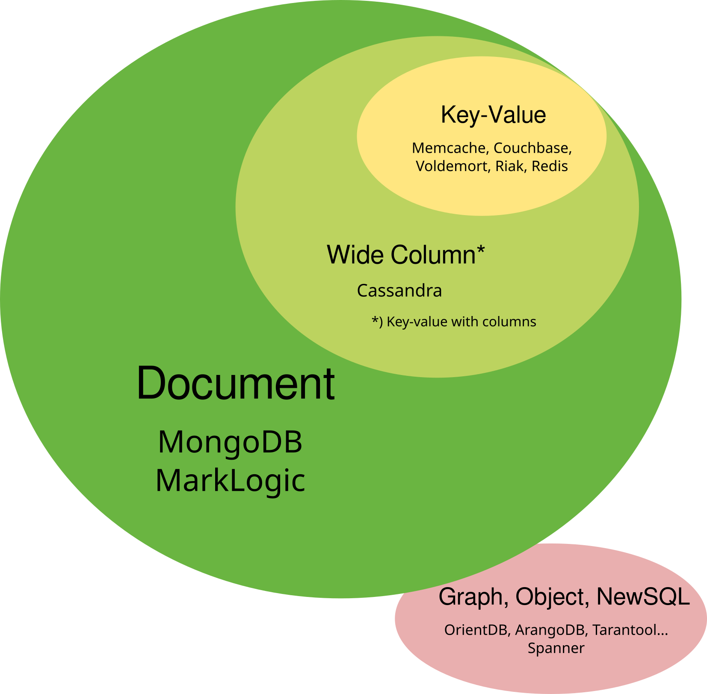
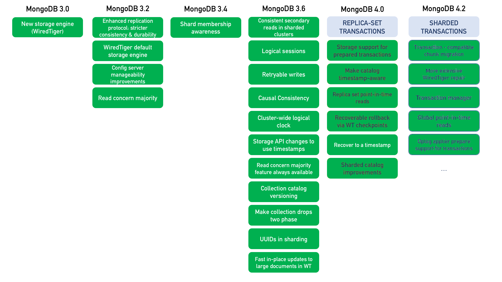
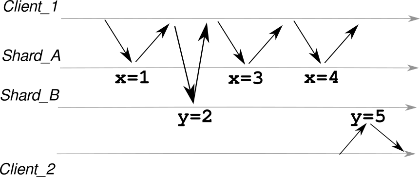

MongoDB
distributed transactions
top to bottom
Henrik Ingo
HighLoad++ 2019
Table of Contents
- Background & History
- Why transactions?
- Concepts & algorithms
- Plenty of links to further reading
Circa 2007...


Cassandra sidebar
- Dynamo replication
- DeCandia et.al. 2007, Vogels 2017
- Client reads & writes multiple nodes
- Majority-style N+M consistency (See CAP theorem, 1999.)
- Con's: read-amplification, repair-on-read
- Log Structured Merge tree (LSM)
What about RDBMS?

- Oracle RAC
- Not webscale
- MySQL
- Replication -> Galera Cluster
MySQL Fabric- Vitesse?
- PostgreSQL
- Logical Replication in 2017
- Sharding: Citus
WHY?
- MongoDB marketing: 80% - 90% of apps don't need transactions.
- Henrik: Well, maybe 50%...
- Werner Vogels, on Amazon.com:
About 70% of operations were of the key-value kind, where only a primary key was used and a single row would be returned. About 20% would ... still operate on only a single table.
WHY?
- Many features only needed by 10%: sharding, join...
- Important to some well paying customers
- Classic example: Move 100€ from account A to B
- By-products: Snapshot Isolation, Causal Consistency, Secondary reads...

Multi Version Concurrency Control
- Bernstein & Goodman, 1981. Reed, 1979. InterBase, 1984.
- Updates create new copies (versions) of records
- All reads from same version
- No read locks
- Obviously consistent
- Updates to same record cause conflict
- Snapshot Isolation
Write Conflict
| |
|
|
|
- Consistency is preserved!
Write Skew
- Business logic: Alice and Bob work in support. One of them must always be oncall.
| |
|
|
|
- That's not good!
Serializable
Avoids any and all anomalies, incl write skew.
- Reality check:
- MySQL: Provides serializeable, nobody uses it.
- Oracle: Serializable is actually SI.
- PostgreSQL: Serializable Snapshot Isolation since 2011
Ports & Grittner, 2012. Cahill et.al, 2008.
SELECT ... FOR UPDATE
- MongoDB: Use
findAndModify()
Spanner sidebar
- How do you even do distributed serializable?
- Classic solution: dependency graph of all transactions
- Not very distributed
- Google: We just order trx by wall clock timestamp
- You can't trust server clock!!
- Google: We put atomic clocks in every data center
- Corbett et.al, 2012
- As of 2017 GCP offers TrueTime as a service
Replication
(Durability)
- Ongaro, 2014: Raft replication (Ingo, 2015)
- MongoDB predates Raft, but is similar:
- Single primary, many secondaries
- Initial sync
- Majority based
- Transaction log
- Differences
- Pull vs push
- Apply first, then replicate
Distributed Snapshot Isolation
- Basic concept:
- Clients can ask to read a specific MVCC snapshot
Tn - Ask for same
Tnfrom each shard
- Clients can ask to read a specific MVCC snapshot
- So now we just need:
- Storage engine must use externally provided
Tn - Writes
TnandTn+1must commit in same order on all shards - Cluster-wide clock
- Storage engine must use externally provided
Lamport clock
- Tyulenev et.al, 2019. Lamport, 1978.
- MongoDB: Monotonically increasing timestamp
- Gossip: If A communicates with B, pass time
- Causality: event on A happened before event on B
- Partial ordering: If A and B don't communicate, no causality
- Clients pass time too
- Causal Consistency is the strongest partition-tolerant consistency level (jepsen.io)
Understanding causality
MongoDB tunable consistency
- Typically choosing sync vs async replication is a global setting. Or not an option at all!
- MongoDB: Replication internals async, but each client can choose sync or async semantics.
- Even writes vs reads tunable separately. For example, linearizable read + non-durable write...
- Schultz et.al, 2019
Two Phase Commit (2PC)
- Mohan et.al, 1986.
- PREPARE -> all YES -> COMMIT
- Prepare is binding: Must be durable
- Commit must succeed
- Crash recovery is non-trivial
- MongoDB: 2x majority commit
- Used
- Between shards
- Replication! (MySQL NDB Cluster)
- Between different databases (1 Oracle, 1 DB2)
Summary
What did we learn today:
MVCC, Snapshot Isolation, Write Skew, Serializeable/SSI, Raft, Lamport, Causal Consistency, Tunable consistency, 2PC.
Bonus slides: NoSQL typology, Cassandra, Dynamo, CAP, LSM, Spanner.